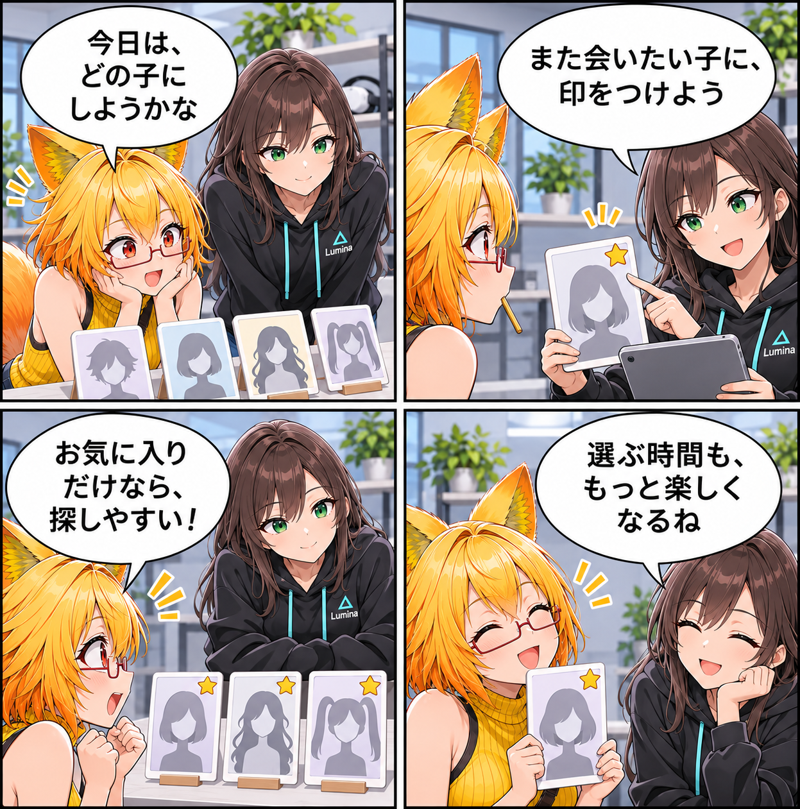

2026.11.14 / Development Log / Feature Spotlight
閑話休題：お気に入りを、アバター選びの目印にする
新規実装の報告ではなく、VRASに既にあるアバターライブラリのお気に入り機能を紹介します。また会いたいアバターへ印をつけ、次に探す時間を少し軽くするための機能です。
今回は feature-spotlight（機能紹介） です。集計期間は2026-11-13 03:00:00 JSTから2026-11-14 02:59:59 JSTまで、対象はViewerの
main です。集計終了時点のHEADは c33733a41be121b814a1732df8c9eae089ace2ea、期間内コミットは0件でした。Assets/Scenes/MainScene.unity の未コミット差分は、期間内に実装された事実を確定できないため実績には含めていません。
迷ったら、また会いたい一人から
VRASのアバターライブラリでは、気になったアバターをお気に入りとして印にできます。あとでもう一度使いたいアバターへ戻るときの、小さな目印です。
表示を、探し方に合わせる
ライブラリではお気に入りだけに絞り込んだり、お気に入りを先に表示する順番を選んだりできます。名前や形式での並び替えもあり、目的に合わせて一覧の見え方を整えられます。
選ぶ時間を、創る時間へ
お気に入りはアバターの見た目を変える機能ではありません。選び直すときの手がかりを残して、次のポーズや撮影へ早く進むための機能です。
今回の紹介範囲
これは現行実装の紹介です。当日に新しく実装・検証完了したことを示すものではありません。
4コマの話
ろひは何人もの候補を前に少し迷い、ルミナは「また会いたい一人に印をつけよう」と提案します。最後はお気に入りだけの列から、今日の一人を見つけます。
まとめ
アバターライブラリのお気に入りは、また使いたいアバターに印をつけ、絞り込みや並び替えで探しやすくする既存機能です。